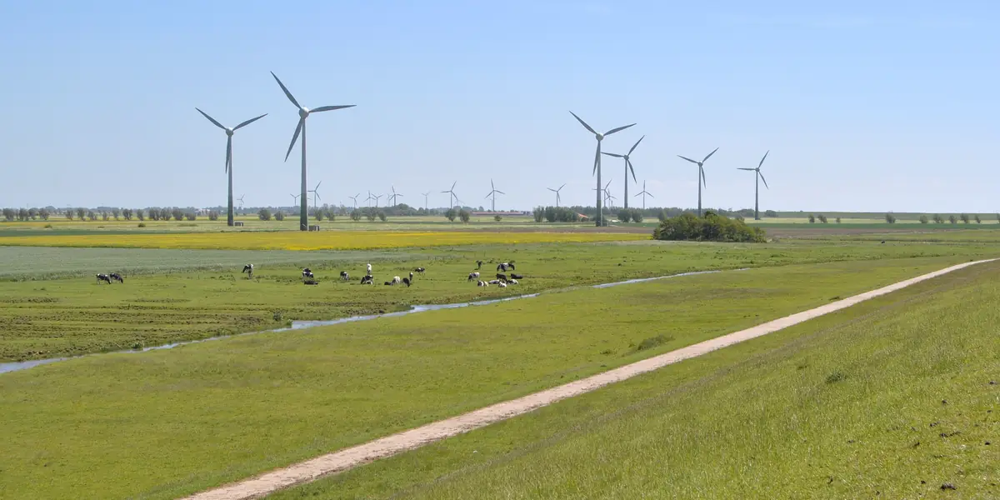
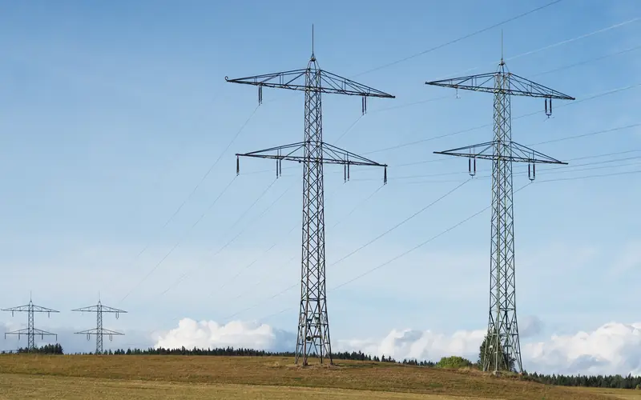
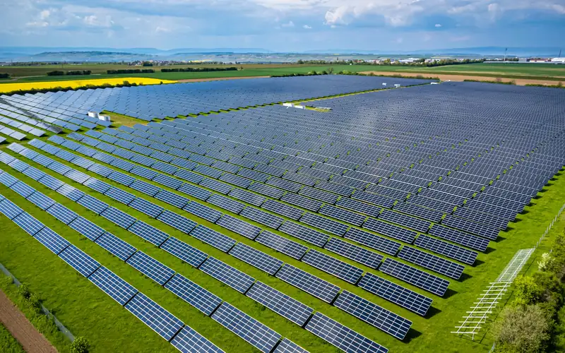

Günstigstes 4-Stunden-Fenster
ca. im Mittel
Feste, bereits veröffentlichte Börsenpreise – keine Prognose.
Beste Ladezeit der letzten Tage
Wird berechnet, sobald Preisdaten vorliegen.
Preisdaten werden geladen …
Keine der Quellen (SMARD.de, Energy-Charts, aWATTar) war erreichbar. Bitte später erneut versuchen.
ca. im Mittel
Feste, bereits veröffentlichte Börsenpreise – keine Prognose.
Wird berechnet, sobald Preisdaten vorliegen.
| Zeitfenster | ct/kWh | €/MWh | Markierung |
|---|
Jetzt
Tiefster Preis, 72 h
Höchster Preis, 72 h
ca. im Mittel
Reiner Börsenpreis ohne Netzentgelte, Steuern, Umlagen und MwSt. – der Haushaltspreis liegt deutlich höher.
Alle Angaben ohne Gewähr – bitte prüfen Sie die Werte selbst, zum Beispiel direkt bei den Datenquellen. Haftungsausschluss

LadeRick zeigt den Preis der täglichen Day-Ahead-Auktion der Strombörse EPEX SPOT für die Gebotszone Deutschland/Luxemburg (DE-LU). Das ist der Großhandelspreis, auf den sich dynamische Stromtarife beziehen. Seit dem 1. Oktober 2025 wird dieser Preis in 15-Minuten-Abschnitten gehandelt; davor galt ein Preis je Stunde. Die Preise für den Folgetag werden in einer täglichen Auktion (auch am Wochenende) ermittelt und frühestens um 12:55 Uhr veröffentlicht, bei Verzögerungen der Auktion auch später. Ab dann stehen sie fest: Die hier als „kommend“ gezeigten Preise sind Auktionsergebnisse, keine Prognose. Davon zu unterscheiden ist der Intraday-Handel, in dem bis kurz vor der Lieferung weiter gehandelt wird; dynamische Haushaltstarife rechnen aber mit dem Day-Ahead-Preis ab. Alle Uhrzeiten auf dieser Seite sind deutsche Zeit (MEZ/MESZ).

Bei einem dynamischen Stromtarif setzt sich der Preis aus dem hier gezeigten Börsenpreis plus festen Bestandteilen zusammen (Netzentgelt, Stromsteuer, Umlagen, Konzessionsabgabe, Anbieteraufschlag, 19 % MwSt.). In der Regel schwankt nur der Börsenanteil – dann ist das günstigste Fenster auch im Tarif das günstigste. Ausnahmen: Bei zeitvariablen Netzentgelten (§ 14a EnWG, Modul 3) oder Tarifen mit Preisuntergrenze kann das günstigste Tariffenster abweichen. Bei einem Festpreistarif ändert sich der Preis nicht. Die konkreten Aufschläge unterscheiden sich je nach Netzgebiet und Anbieter; LadeRick zeigt sie nicht.
Über die vergangenen 72 Stunden – bis zum Ende der letzten vollständig abgeschlossenen Viertelstunde – wird ein gleitendes 4-Stunden-Fenster gelegt (Schrittweite = Datenauflösung, in der Regel 15 Minuten). Für jedes Fenster wird der zeitgewichtete Mittelwert gebildet; das Fenster mit dem niedrigsten Mittel wird angezeigt. Bei gleichem Mittel gewinnt das frühere Fenster. Fehlen einzelne Werte, werden nur lückenlose Fenster berücksichtigt; gibt es keines, wird das beste Fenster mit mindestens 75 % Datenabdeckung als Näherung gekennzeichnet. Der angegebene Durchschnittspreis ist auf eine Nachkommastelle gerundet und deshalb ein „ungefährer“ Wert. Die orangefarbene Karte oben nutzt dieselbe Rechnung für die bereits veröffentlichten Preise, berücksichtigt aber nur Fenster, die noch nicht begonnen haben (frühester Start ist die nächste volle Viertelstunde nach „jetzt“; die Seite rechnet kurz vor jeder Viertelstunde neu). Nur dieses kommende Fenster ist im Diagramm orange markiert.
Der aufklappbare Rückblick „Beste Ladezeit der letzten Tage“ in der orangefarbenen Karte fragt etwas anderes: Welche Uhrzeit war als Ladebeginn im Durchschnitt der letzten 72 Stunden am günstigsten? Dafür werden für jede Uhrzeit im 15-Minuten-Raster die 4-Stunden-Fenster mit diesem Startzeitpunkt an allen Tagen des Zeitraums gemittelt (jeder Tag zählt gleich); die Uhrzeit mit dem niedrigsten Durchschnitt wird genannt. Gewertet werden nur Uhrzeiten, für die mindestens zwei vollständige Fenster vorliegen. Das einzelne günstigste Fenster der letzten 72 Stunden kann davon abweichen, wenn ein Tag einen Ausreißer hatte.
An sonnigen oder windigen Tagen kann der Börsenpreis unter null fallen: Es gibt mehr Strom, als gebraucht wird, und Erzeuger zahlen für die Abnahme. In dynamischen Tarifen wird der Börsenanteil dann je nach Tarif gutgeschrieben oder auf null begrenzt; die festen Bestandteile bleiben.

LadeRick greift ausschließlich auf öffentliche, regelmäßig aktualisierte Quellen zu. Die erste erreichbare Quelle mit ausreichend Daten wird verwendet; welche das ist, steht in der Statuszeile unter den Kennzahlen. Fehlen dort Preise, die bereits veröffentlicht sein müssten – typischerweise nach 12:55 Uhr die Preise für morgen, die SMARD.de oft erst Stunden später nachträgt, an einzelnen Tagen auch Preise des laufenden Tags –, ergänzt LadeRick nur diese fehlenden Zeiträume aus aWATTar. Unter dem Diagramm steht dann ein Hinweis; sobald die Hauptquelle nachzieht, werden ihre Werte übernommen. Alle Quellen geben dieselbe Day-Ahead-Auktion der EPEX SPOT wieder; aWATTar liefert Stundenwerte, die dem Mittel der vier Viertelstundenpreise entsprechen.
Die Seite ruft die Daten beim Öffnen ab – wurde sie innerhalb der letzten 10 Minuten bereits geladen, zunächst aus dem lokalen Speicher des Browsers – und aktualisiert sie danach automatisch jede Stunde, ab 12:55 Uhr alle 5 Minuten, bis die Preise für morgen vorliegen (solange sie nur ergänzt sind, alle 30 Minuten), sowie beim Zurückkehren in den Tab, wenn der letzte Abruf länger als 10 Minuten zurückliegt. Der serverseitige Zwischenspeicher wird planmäßig stündlich erneuert; GitHub führt solche geplanten Läufe allerdings teils deutlich seltener aus.
Angaben gemäß § 5 DDG (Digitale-Dienste-Gesetz). LadeRick wird angeboten von:
Jan-Rickmer FeindtInhaltlich verantwortlich (§ 18 Abs. 2 MStV): Jan-Rickmer Feindt, Anschrift wie oben.
Verantwortlich im Sinne der Datenschutz-Grundverordnung (DSGVO) ist Jan-Rickmer Feindt, An der Bauna 30, 34270 Schauenburg (Kontaktdaten siehe Impressum).
LadeRick benötigt keine Anmeldung, setzt keine Cookies und verwendet kein Tracking. Der Betreiber selbst erhebt, speichert und wertet keine personenbezogenen Daten der Besucherinnen und Besucher aus.
Hosting. Die Seite wird über GitHub Pages ausgeliefert, einen Dienst der GitHub, Inc., 88 Colin P. Kelly Jr. Street, San Francisco, CA 94107, USA. Beim Aufruf erhält GitHub technisch bedingt die IP-Adresse Ihres Browsers und kann sie zusammen mit weiteren Zugriffsdaten (Zeitpunkt, aufgerufene Datei, Browsertyp) in Server-Protokollen speichern; der Betreiber von LadeRick erhält diese Protokolle nicht. Die Daten werden damit in die USA übermittelt. GitHub, Inc. ist nach eigenen Angaben nach dem EU-U.S. Data Privacy Framework zertifiziert, für das ein Angemessenheitsbeschluss der EU-Kommission vom 10. Juli 2023 gilt (Art. 45 DSGVO). Einzelheiten, auch zur Speicherdauer, stehen in der Datenschutzerklärung von GitHub.
Preisdaten. Die Preisdaten ruft Ihr Browser direkt bei den unter Datenquellen genannten Anbietern ab, nacheinander in der dort genannten Reihenfolge, bis eine Quelle ausreichend Daten liefert; in der Regel wird also nur SMARD.de angefragt. Der jeweils angefragte Anbieter (Bundesnetzagentur, Fraunhofer ISE oder aWATTar GmbH) erhält dabei technisch bedingt die IP-Adresse Ihres Browsers und den angefragten Zeitraum, sonst nichts; die Speicherdauer richtet sich nach den Datenschutzhinweisen des jeweiligen Anbieters. Der Zwischenspeicher ist eine Datei auf demselben Server wie diese Seite und enthält ausschließlich Preisdaten.
Zweck und Rechtsgrundlage. Zweck dieser Verarbeitung ist ausschließlich die Auslieferung der Seite und die Anzeige der Preise. Rechtsgrundlage ist Art. 6 Abs. 1 lit. f DSGVO; das berechtigte Interesse liegt in der sicheren und zuverlässigen Bereitstellung des Angebots ohne eigenen Server. Die Bereitstellung der IP-Adresse ist weder gesetzlich noch vertraglich vorgeschrieben; ohne sie ist ein Abruf der Seite technisch jedoch nicht möglich.
Lokaler Speicher. Im lokalen Speicher Ihres Browsers (localStorage) legt LadeRick drei Einträge ab, die weder an den Betreiber noch an Dritte übertragen werden: die gewählte Darstellung (hell/dunkel; nur, wenn Sie sie umschalten), den gewählten Diagramm-Zeitraum (1 bis 3 Tage) und die zuletzt geladenen Preisdaten samt Abrufstatus. Die Preisdaten werden bis zu 10 Minuten ohne erneuten Abruf wiederverwendet, bei jedem erfolgreichen Abruf überschrieben und beim nächsten Öffnen der Seite verworfen, wenn sie älter als 24 Stunden sind. Darstellung und Zeitraum bleiben gespeichert, bis Sie die Website-Daten in Ihrem Browser löschen. Diese Einträge enthalten keine personenbezogenen Daten und keine Kennungen, mit denen Sie wiedererkannt werden könnten; die Speicherung ist für die von Ihnen gewünschte Funktion erforderlich und bedarf keiner Einwilligung (§ 25 Abs. 2 Nr. 2 TDDDG).
Ihre Rechte. Sie haben das Recht auf Auskunft (Art. 15 DSGVO), Berichtigung (Art. 16), Löschung (Art. 17), Einschränkung der Verarbeitung (Art. 18) und Datenübertragbarkeit (Art. 20) sowie das Recht, sich bei einer Datenschutzaufsichtsbehörde zu beschweren (Art. 77 DSGVO); für den Betreiber zuständig ist der Hessische Beauftragte für Datenschutz und Informationsfreiheit. Anfragen richten Sie bitte an die im Impressum genannten Kontaktdaten.
Widerspruchsrecht. Sie haben das Recht, aus Gründen, die sich aus Ihrer besonderen Situation ergeben, jederzeit gegen die Verarbeitung Sie betreffender personenbezogener Daten, die auf Art. 6 Abs. 1 lit. f DSGVO beruht, Widerspruch einzulegen (Art. 21 Abs. 1 DSGVO).
Die auf LadeRick angezeigten Preise, Kennzahlen und Berechnungen werden ohne Gewähr bereitgestellt. Sie werden automatisch aus den unter Datenquellen genannten öffentlichen Quellen abgerufen und verarbeitet; dabei können Übertragungs-, Verarbeitungs- oder Anzeigefehler auftreten, und die Daten können verspätet, unvollständig oder veraltet sein. Für die Richtigkeit, Vollständigkeit und Aktualität der angezeigten Informationen wird, soweit gesetzlich zulässig, keine Haftung übernommen; unberührt bleibt die Haftung für Vorsatz und grobe Fahrlässigkeit sowie für Schäden aus der Verletzung von Leben, Körper oder Gesundheit. Entscheidungen, die auf Grundlage dieser Informationen getroffen werden, erfolgen auf eigene Verantwortung.
Alle Angaben ohne Gewähr. Bitte prüfen Sie die angezeigten Informationen selbstständig und kritisch, zum Beispiel direkt bei den unter Datenquellen genannten Anbietern oder anhand der Preisinformationen Ihres Stromanbieters. LadeRick bietet keine Energie-, Rechts- oder Finanzberatung und ersetzt nicht die verbindlichen Angaben Ihres Stromanbieters oder Ihres Stromvertrags.
Für die Inhalte verlinkter externer Seiten sind ausschließlich deren Betreiber verantwortlich.